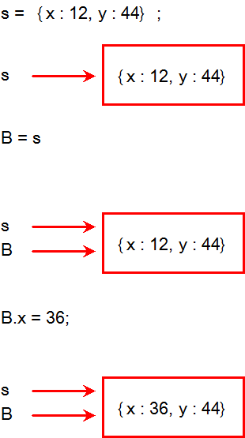

JavaScript Temelleri
Bölüm 2
Temel Bilgiler
2.14 - Verilerin Değer ve Referansla Aktarımı (Devam)
Bölüm 2 Sayfa 18
2.14.2 - Referansla Aktarım
Bazı verilerin boyutları çok büyük olabilir. Nesnelerle çalışırken bu verilerin içiçe istendiği kadar kadar derinlikte tanımlanabileceği görülmüştü. Bu veriler, inanılmaz büyüklükte oluşturulabilirler ve bellekte inanılmaz büyüklükte bir alan adresleyebilirler. Bu veriler aktarımda kopyalanma ile aktarılsa kısa sürede adrslenebilen bellek alanı tükeneceğinden program devreden çıkar. Bu veriler, belleğe bir kez yerleştirildikten sonra bir daha yerinden oynatılmaz ve kopyalanarak başka bir alana da taşınmaz. Bu veriler, nesne (object) tipindedir.Bu verilerin kopyalanması, fonksiyonlarda argüman olarak kullanılması ve karşılaştırılmaları için başka mekanizmalar bulunması gerekli olmuştur. Bulunan yöntem, verinin sabit kalması, yapılacak değişikliklerin aynı veri üzerinde yapılması, verinin sürekli güncellenebilmesi fakat taşınmamasına dayanmaktadır. Bir değişkene atanmış olan bir nesne, başka bir değişkene de aktarılmak istenirse, değerin kopyası değil işaretçinin kopyası yeni değişkene aktarılır. İşaretçi bir tamsayı (hex sayı) dır. Bu bir ilkel değer olduğundan bellekte az yer kaplar ve değerle yani kopyalanarak aktarılabilir.

Referansla Aktarım Mekanizması
Yukarıdaki şemada, bir referansla veri aktarımının yürüyüş şeması görülmektedir. İlk olarak s değişkenine bir nesne literali atanmaktadır. Bu atamadan sonra, s değişkeninin bellek işaretçisi, nesne literalinin bulunduğu bellek adresini işaret etmektedir. Bundan sonra, s değişkeninin değeri, bir B değişkenine aktarılmaktadır. Burada s değişkeninin değeri, sadece nesnenin bulunduğu belleğin yerini işaret eden bir hex sayı olan bellek işaretcisidir. Bu durumda, B değişenine sadece s değişkeninin değeri olan tamsayı tipinde bellek işaretçisinin bir kopyası atanacaktır. Nesne bulunduğu yerde kalmakta ne yer değiştirmekte ne de kopyalanmaktadır. Bu atamadan sonra aynı nesnenin bellek adresini işaret eden işaretçi sayısı ikiye çıkmış, hem s hem de B aynı nesneyi işaret eder hale gelmişlerdir. Sonra, B değişkeni nesnenin bir özelliğini değiştirmiş, yani nesneyi güncellemiştir. Bunun olabilmesi,nesnelerin mutasyona uğrayabilme yeteneğinden dolayıdır. Bu durumda, nesne mütasyona uğramış yani yani yeni bir şekil alarak güncellenmiştir. Nesne sadece bir tanedir. Güncellenen aynı nesnedir. Güncelleme sonunda nesnenin bazı özelliklerinin değeri değişmiş, fakat diğer özelliklerinin değeri değişmememiştir. Aynı nesneye işaret eden hem s hem de B değişkenleri, artık nesnenin güncellenmiş değerine erişim sağlayabilirler. Yani s değişkeni de nesnenin güncellenmiş değerlerine erişim sağlamaktadır. Bir nesne, bir kez güncellenirse, o nesneye işaret eden tüm değişkenler güncellenmiş değerlere erişim sağlayabilirler. Deneyimsiz programcılar için en büyük yanılgı kaynağı olan bu güncel değerin nesneye işaret eden her değişkene yansıması, değişkenin değil referansının kopyalanmasının sonucudur. Bu mekanizmaya referansla aktarım adı verilir. Tüm nesneler referansla aktarılırlar. Referansla aktarımın verinin yedeklenmesi anlamına gelmediğini belirtelim. Burada sadece nesnenin referansı yani nesnenin bellekteki yerine işaret eden ve ilkel hex tamsayı tipinde olan bellek işaretçisi (pointer) kopyalanmaktadır. Nesnenin gerçek kopyasının alınabilmesi, aynı nesnenin literal olarak (değerin klavyeden yeniden girilmesi veya başka bir yöntem ile orijinal verilerin başka bir değişkene yeniden atanması ile gerçekleştirilebilecektir. Yukarıdaki şemada izlenebilen, referansla aktarım işlemi, bir JavaScript programında uygulanmış ve bu programın bağlantılı olduğu sayfada verdiği sonuç aşağıda verilmiştir.
... var s = {x : 12, y : 44}, B = null; B = s; B.x = 36; sonuçYaz('s.x = ', s.x, 'b2.14.2-uyg-1-sonuç-1'); ...
Program Sonucu :
Program sonucunda, güncellenmiş nesneye işaret eden tüm bellek işaretçileri nesnenin güncellenmiş haline işaret etmektedirler. Bu yüzden orijinal değer de güncellenmiş değer olarak değişmiştir. Bu olguya programlarda çok dikkat edilmesi gerekir.
Nesnelerin fonksiyonlarda argüman olarak kullanılmaları durumunda, sadece işaretçileri, argüman olarak kullanılır. Bu durumda, fonksiyonların içinde bu nesnelere uygulanacak değişiklikler, doğrudan nesneyi günceller. Bu durumu açıklayan bir uygulamanın JavaScript kodları aşağıda görülmektedir:
... function byRef(nesne); nesne.x = 36; } var s = {x : 12, y : 44}, B = null; B = s; byRef(B); sonuçYaz('s.x = ', s.x, 'b2.14.2-uyg-2-sonuç-1'); ...
Program Sonucu :
Elde edilen bu sonuç, tüm referansla yürütülen işlemlerde olduğu gibi, anlaşılması ilk bakışta güç bir sonuç olmaktadır. Aslında fonksiyonun yaptığı işlem bir önceki uygulamada yapılan işlemin aynısıdır. Sadece, nesnenin güncellenmesi, fonksiyon tarafından gerçekleştirilmektedir. Bu uygulamaların her ikisinde de, B değişkeninde gerçek bir değer yoktur. B değişkeni sadece bir yönlendiriciden ibarettir. B değişkeni, kendisi üzerinden yapılan tüm değişiklikleri, gerçek verinin bulunduğu s değişkenine yönlendirmektedir. Referansla aktarılan tüm veri tipleri fonksiyonlarda argüman olarak kullanılıp, fonksiyon içinde bir güncellemeye uğrarlarsa, bu değişiklik orijinal nesneye yansıyacaktır.
Fonksiyona bir değişkenin referansla aktarımı terimi, değişik program dillerinde değişik şekilde algılanmaktadır. Çoğunlukla, eğer değişken fonksiyon içinde bir değişikliğe uğrar ve bunun sonunda dış değer de etkilenirse, büyüklüğün referansla akatarıldığı belirtilmektedir. Burada ise daha net bir kavram kullanılmıştır. Burada gerçek durum ile yani bir fonksiyona argüman olarak aktarılan değişkenin, gerçek değerin kopyasını mı yoksa referansını mı içerdiği ile ilgilenmekteyiz. Gerçek değerle aktarılan büyüklükler, gerçek değerin bir kopyasını aktarırlar. Referansla aktarılan büyüklükler, gerçek değerin bir ve tek (benzersiz) bir hex tamsayı olan referansını aktarırlar. Bir fonksiyona aktarılmış olan bir değişken, bir değerin referansını (bellekteki posizyonunu açıklayan hex sayıyı) (hex sayılar tanım olarak tamsayıdır) içeriyorsa, fonksiyon içinde tahrip edici bir atamaya uğramazsa, uğradığı tüm değişikler, işaretçi yani referansın işaret etttiği bellek bölgesinde gerçekleşir. Yani, fonksiyon içinde yaşanan değişiklikler, fonksiyon dışındaki ana büyüklüğe yansır. Eğer bir fonksiyona aktarılmış olan bir değişken, bir değerin referansını içeriyorsa ve fonksiyonda bir değişikliğe uğramazsa, fonksiyon içindeki tüm hesaplar, bu bellek bölgesindeki değişkenin değerlerinden yararlanılarak gerçekleşir, fakat bu değerler değiştirilmediği için, dış büyüklük değişmeden kalır. Fonksiyona değer olarak beslenen argümanlar, gerçek değerin başka bir bellek bölgesinde olan kopyası üzerinde işlem yaptıklarından, fonksiyonda gerçekleşen değişikler, sadece kopyayı etkiler, esas büyüklüğü etkilemez. Fonksiyonda salt okunur veya okunur/yazılır bir işlem yapılması fonksiyonun iç işidir. Fonksiyonun işlevi argümanın ne şekilde beslendiğini belirlemez. Argüman değer ile aktarılmışsa, esas değerin kopyasını, argüman referans ile aktarılmışsa argümanın referansını içerir. Burada, değer ve referansla aktarım kavramını bu gerçek şekliyle algılıyoruz.
Bazı durumlarda, nesne referanslarının bir fonksiyonda argüman olarak kullanıldığında, fonksiyon içindeki güncellemenin dış nesneye yansımaması istenebilir. Bu durumda, değerle aktarım için bir düzenleme yapılması gerekir. Eğer fonksiyon içinde, nesne referansına yeni bir değer atanırsa, referansın ana nesne ile ilişkisi kesilir. Bu durumda, ilişkinin kesildiği satırdan sonraki değişiklikler dış nesneye yansımaz. Fonksiyon dışında ise, nesne ve referansları arasındaki ilişki aynen devam eder. Bu konuda bir JavaScript programı ve ilişkilendirilmiş olduğu sayfada verdiği sonuçlar, aşağıda görülmektedir.
... function byVal(nesne); var d = {}; d.x = nesne.x / 2; } var s = {x : 12, y : 44}, B = null; B = s; byVal(B); sonuçYaz('s.x = ', s.x, 'b2.14.2-uyg-3-sonuç-1'); ...
Program Sonucu :
Sonuçlar, byVal() fonksiyonun, işlevini yaparak, argümanını güncellemeden özelliklerine erişebildiğini göstermektedir. Kodları satır satır izlemeye çalışalım. İlk olarak bir {x : 12, y : 44} nesne literali yaratılarak referansı s değişkenine atanıyor. Sonra, bir B değişkenine s referansı kopyalanıyor. B referansı ( s ile aynı) bir byVal() fonksiyonuna argüman olarak olarak besleniyor. Fonksiyon içinde, yeni boş d nesne literali yaratılıyor. Bu boş nesne litraline bir x özelliği ekleniyor ve değeri nesne argümanın x özelliğinin değerinin yarısına eşitleniyor. Bu değişiklik sadece fonksiyon içinde tanımlanmış yani yerel kapsamda bir değişken olan, d nesnesini etkilemektedir. Fonksiyon içindeki d nesnesinin fonksiyon dışındaki s nesnesi ile bir ilişkisi yoktur. Burada d nesnesi, s nesnesinin x özelliğine sadece erişmekte fakat güncellememektedir. Fonksiyon dışında s nesnesinin x özelliği orijinal değeri ile kalmaktadır.
Referans tipi olarak adlandırılan nesnelerin karşılaştırmaları, bölüm 2.10 de ayrıntılı olarak incelenmiştir. Bu konu gözden geçirilmeli ve bilgiler netleştirilmelidir.
2.14.3 - Sözel Verilerin Aktarımı
Sözel veriler, karakter dizigisi (string) tipindedir. Bu tip veriler, kuramsal olarak sonsuz büyüklükte olabilmelerine karşın, pratikte bilgisayar programcılığında kullanılan sözel verilerin büyüklüğü, fazla büyük değildir. Sözel verilerin bir özelliği, mütasyona uğramayan (immutable), yani ekleme veya çıkarma yapılamayan veri türleri olduklarından, yenilenmelerinin ancak tahrip edeci total atama yolu ile olabilmesidir. Bu verilerin parsiyel yenilenmeleri ve mütasyonları olanağı olmadığından, referans veya değerle aktarılıp aktarılmadıkları ,deneysel olarak anlaşılamaz. Bu konuda pratik sonuçlar geçerlidir. JavaScript yorumlayıcısı, ileri bir tasarım teknolojisine sahiptir ve birçok programlama dilinin aksine, sözel verileri, görünürde değerle aktarabilme ve değerle karşılaştırma yeteneğine sahiptir. Bu konuda sözel verilerin sayısal verilerden hiçbir farkı olmadığı gibi bir izlenim edinilir. Gerçek mekanizma ise, JavaScript yorumlayıcısınının yazılımına bağlıdır, kullanıcıya kapalıdır ve kullanıcıyı etkilemez.
2.14.4- Verilerin Aktarım ve Karşılaştırma Yöntemleri Tablosu
Aşağıdaki tablo çeşitli JavaScript veri tiplerinin aktarım ve karşılaştırma işlemlerindeki davranışlarını açıklamaktadır.
Bu tablodan açıkça, nesne olarak yapılandırılmış ilkel verilerin karşılaştırmalarda sorun yaşayacağı görülüyor. Bir veri eğer değerle aktarılıyorsa, karşılaştırılma dahil her mekanizmada değer olarak aktarıldığında program homojenitesi daha iyi sağlanabilir. Oysa, bu tip tanıtılmış veriler, tüm işlemlerde değerle aktarılırken, karşılaştırılmalarda nesne olduklarından, referans ile karşılaştırılıyorlar. Bu da yanılgıları birlikte getirebilir. Daha homojen bir kod ortamının oluşturulabilmesi için,
İlkel değerlerin nesne olarak tanıtılmaları, çok az rastlanılan bazı özel durumlar dışında, hiç bir performans artışı sağlamaz, üstelik potansiyel bir hata kaynağı olabilir.